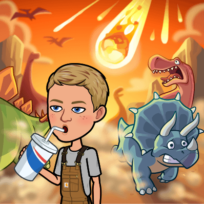
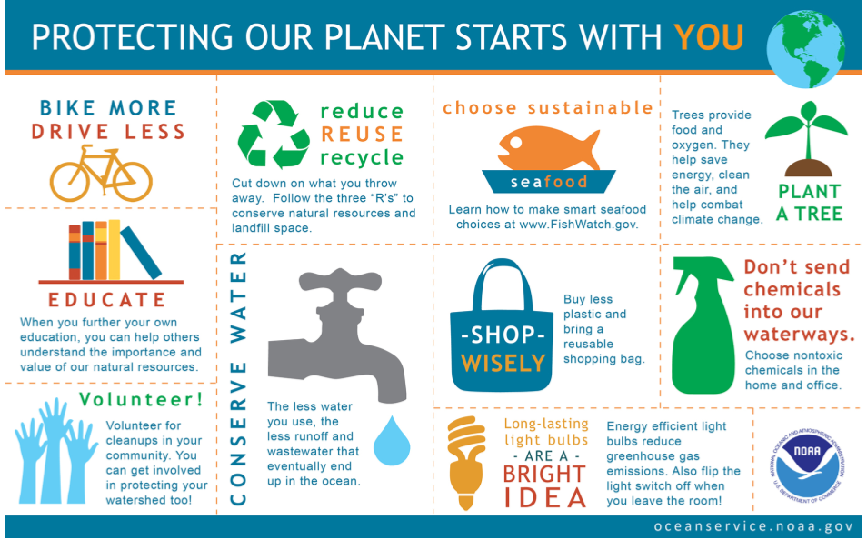

“The coal we burn today got its start some 300 million years ago. Back then, dinosaurs roamed the Earth. But they didn’t get incorporated into coal. Instead, plants in bogs and swamps died. As this greenery sunk to the bottom of those wet areas, it partially decayed and turned into peat. Those wetlands dried out. Other materials then settled down and covered the peat. With heat, pressure and time, that peat transformed into coal. To extract coal, people now have to dig deeply into the earth.”
SOURCE: Where fossil fuels come from
